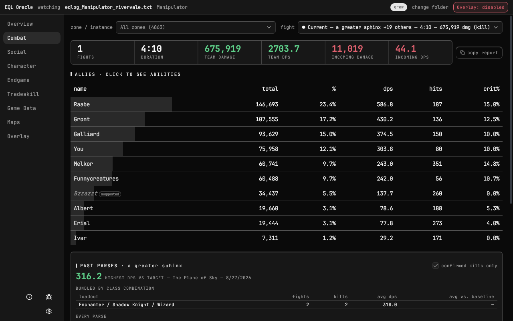
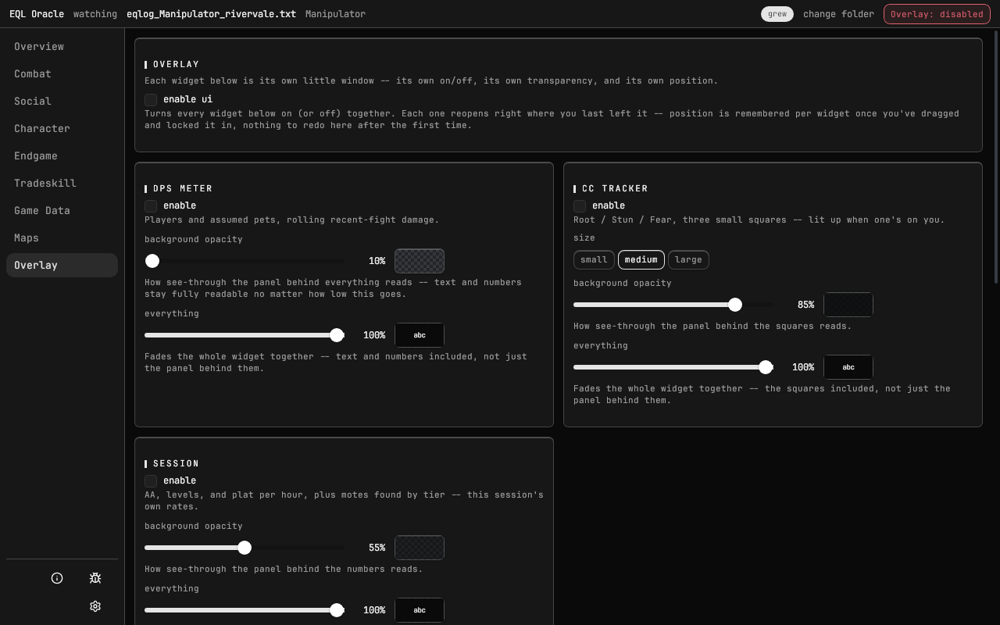
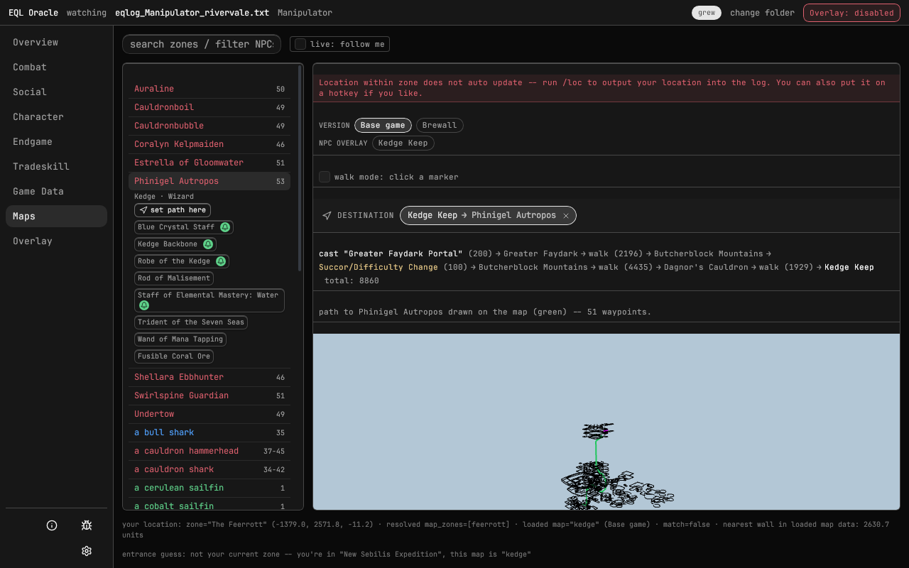
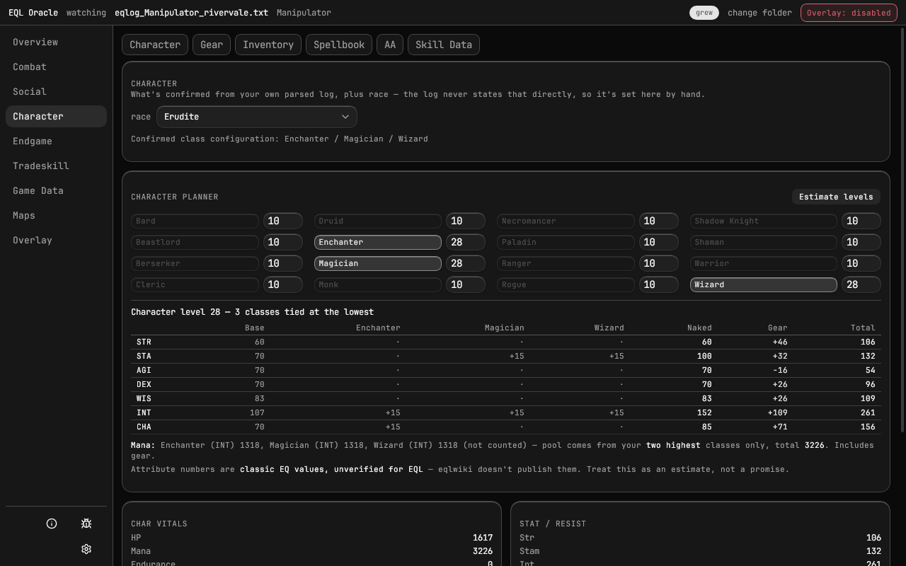
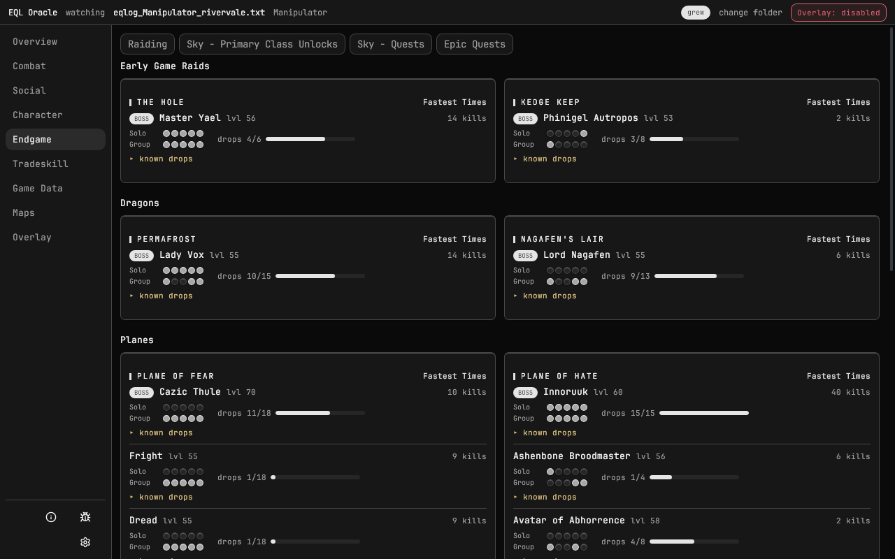
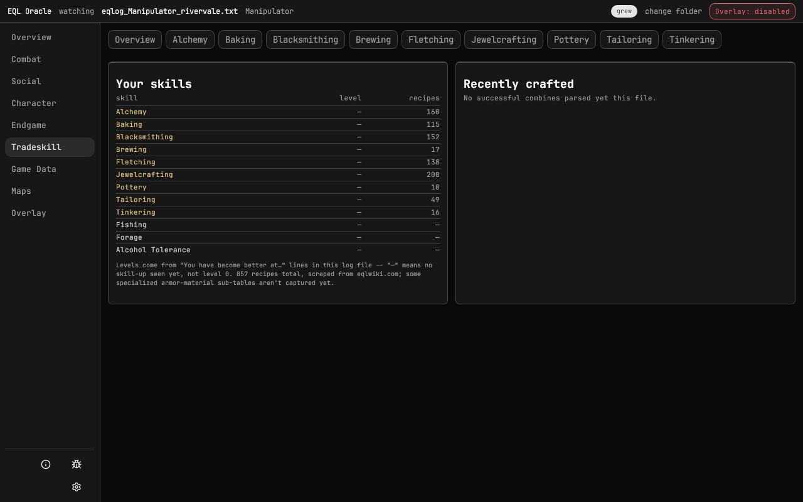
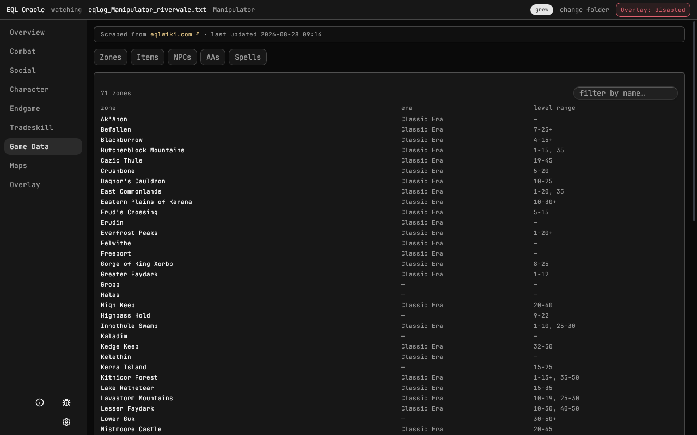
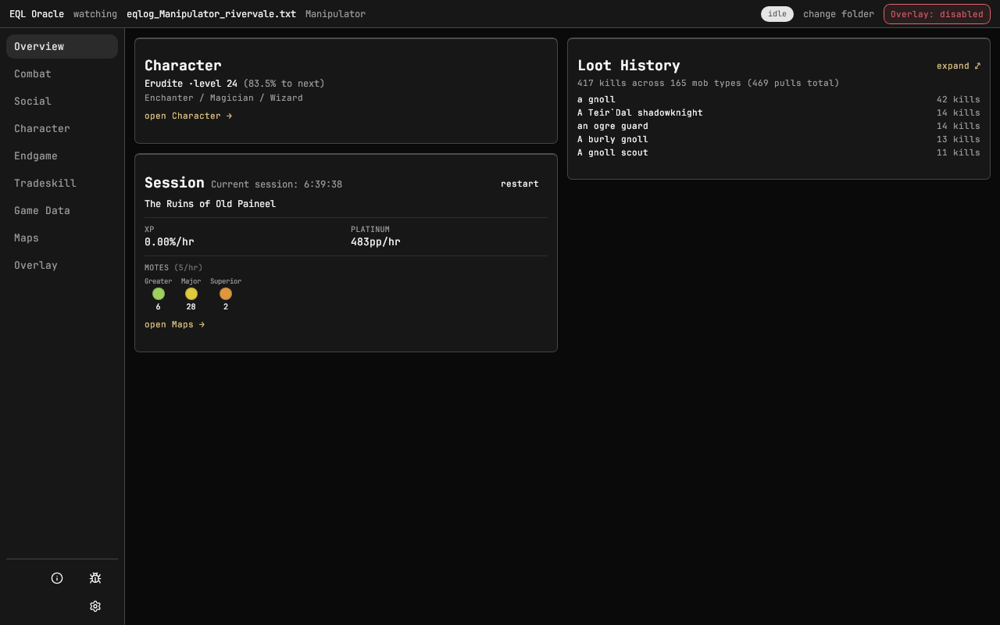

A live combat meter, an in-game overlay, drop tracking, navmesh maps, and automatic class detection — all read straight off your own log. Free, open source, runs entirely on your machine.
current release: 0.14.0 · September 2, 2026 · Windows and Linux
your log is parsed locally — nothing is ever uploaded

Scroll, or pick a tab. Every screenshot is the real app on a real log.
Every fight is found in the log itself: pulls open on the first hit, adds fold in, a kill or a wipe closes it, a mezz keeps it alive. Nothing to start or stop.
Separate always-on-top, click-through windows: DPS meter, Skill Tracker, Drop Watch, CC Tracker, Session. Each has its own position and opacity, and they stay put over borderless fullscreen on Windows.

Zone maps with the NPC list on the side. Click a mob, get a path from where you stand — computed over EQEmu's navigation meshes, collision, and water volumes, so it goes around geometry and swims where you'd swim.
/loc places you on it.
Your class trio is detected from what you cast and which AAs you use, per zone visit. The gear planner understands tiers and exalts; the spellbook builder suggests damage spells rank-aware.
/outputfile inventory — every bag, bank slot, and "where is my X".
Boss and miniboss kill counts, drop tables against what you've actually looted, solo and group tiers kept apart, fastest clears. Plane of Sky class unlocks and quest tracking with confirmed turn-ins.

Current level in each tradeskill, parsed from skill-ups, a recipe catalog, and a craft log built from your own combines.

A local reference with your own history folded in: every NPC page shows your encounters and loot with it, every zone page your visits.

Character, current session rates, motes by tier, recent loot. Resets when you come back from AFK or when you say so.

Fair question for a download from a site you've never heard of. Here is exactly what you're getting.
The installer is not code-signed — a signing certificate costs a few hundred dollars a year, and this is a free tool by one player. So SmartScreen shows "Windows protected your PC" with an unknown publisher. Click More info, then Run anyway. That warning is about the missing certificate, not about what the file does.
eqlog_<Character>_<Server>.txt — read-only, never modified./outputfile inventory dumps if you make them.Updates land as public releases; the app checks for them on launch and asks before installing.
The short version. The long version is in the repo.
The newest eqlog_*.txt is polled every 100 ms by byte offset and file identity. Rotation, truncation, and replacement are all handled; the log is only ever opened read-only.
Two stages: a single multi-pattern anchor pass narrows each line to candidate rules, then per-rule regex extracts fields. The result is one of ~160 typed actions — every line accounted for, matched or not.
Append-only columnar event store with interned names; encounters are row ranges over it, not copies. A full multi-month raid log replays in seconds inside a few hundred MB.
A streaming fight graph decides boundaries: idle windows close fights, mezz keeps them alive, resets link to re-engagements, and a corpse from a merged pull is folded into its keeper. Kill and reset are distinct outcomes, never guessed.
EQEmu's Detour navmesh per zone, its collision mesh for line of sight, its water volumes for where swimming is allowed. Mesh islands are bridged only through water; an underwater zone adds swim nodes for shafts the mesh can't carry.
Deterministic: the same log always produces the same state. History backfills in parallel across cores, then live lines apply in order — restart the app and it rebuilds everything from the file alone.